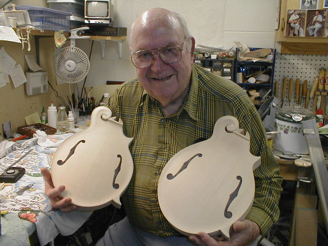

←
12345678910111213
→
More binding.
- 70) Here I am pre-bending a piece of binding before putting it in place. I warm it with a heat gun until it is pliable....
- 71) .... then I quickly grab a pair of pliers and bend it close to the proper shape. I hold it there for about 30 seconds until
it cools. Great care has to be exercised while heating binding this way. It's quite easy to set it on fire. I've done this more than once!
- 72) Usually the last (and most difficult) piece of binding to go on is the piece around the button on the heel. I preshape it, miter the ends, put some
thick super glue on it, and hold it in place with pliers. A quick shot of super glue accelerator and and it's in place, for good!
- 73) Back to Chris' mandolin. It's getting the more traditional "top binding" treatment, with the black and white lines visible on the top and back instead of the side. I do that style of binding in two steps. The black/white layer goes on first, then the ivoroid is applied in a separate step. It's just too much to bend to try and do it in one step.
- 74) Scraping the binding on Chris' mandolin. I use scrapers, chisels, gouges. and sandpaper to get it level.
- 75) Pretty much the only way to clean up the scroll area is with the chisels and gouges. It's always a little ticklish trying to avoid gouging the top, or even worse, a finger.
- 76) 15th fret ivoroid cross piece and maple "riser block" (for lack of a better term) are fitted to the top/neck joint area.
- 77) Here you can see the dovetail area has been cut away from the riser block and the pieces are laying
close to their final resting place.
- 78) Chisels are used to clean up the dovetail area in the riser block. You can see a side and top view of the blocks and cross pieces after installation.
- 
- 79) My neighbor from just down the road in Maryville, Tut Taylor stopped by for a visit.
←
12345678910111213
→
© Lynn Dudenbostel, 2002.